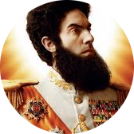

Haffaz Ajamhinadad Osama Hussein Aladeen
President Prime Minister Supreme Leader of
The Republic Of Wadiya
This website is
Extremely
Aladeen
My Hobbies
Driving my Porsche 911
Crushing the infidels
Building my own nuclear arsenal to keep the American dogs at bay
My favorite languages
Wadiyian
What do you mean I need more than one?
Connect with me and become a proud Wadiyian citizen